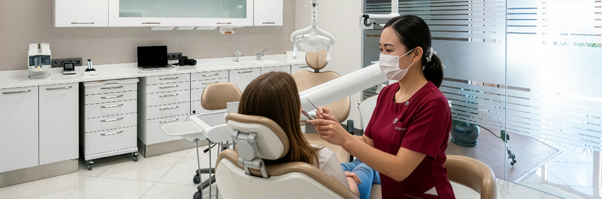
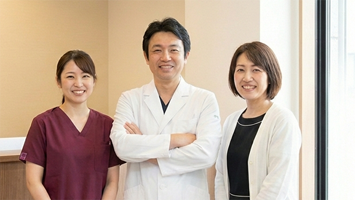

診療案内
お悩みに合わせて、無理のない治療を
How to Read Our Treatment Guide

Treatment by Concern
「痛い」「しみる」といった症状は、虫歯のサインかもしれません。当院では、できるだけ痛みを抑えた治療を心がけ、歯を削る範囲も最小限に留めます。まずはしっかりと診察し、現在の状態をわかりやすくご説明いたします。
すぐに削る・抜くという選択ではなく、まずは状態を正確に把握し、患者さまと相談しながら治療方針を決定します。必要以上の治療はいたしません。
歯ぐきがしみるのは、歯ぐきの炎症や、歯の根元が露出していることが原因の可能性があります。特に、歯周病や、力がかかりすぎている場合、間違ったブラッシング習慣によっても歯ぐきは敏感になります。当院では、まず原因を正確に特定し、患者さまに合ったケア方法や治療法をご提案いたします。
歯ぐきのトラブルは、放置すると悪化する可能性があります。ご自宅でのケアはもちろんですが、正しいブラッシング指導や、歯周病治療を行うことで、症状を改善することができます。また、知覚過敏がひどい場合は、専用の薬剤を塗布することでしみるのを防ぐことも可能です。まずは痛みの原因を見極め、患者さまにとって最善の方法を一緒に考えさせてください。
歯が折れた、欠けたといった場合、できる限りご自身の歯を活かすことを第一に考えた治療法をご提案いたします。オフィスホワイトニングとホームホワイトニングをご用意しております。どちらも安全性の高い薬剤を使用し、歯科医師の管理のもとで行います。カウンセリングで、お一人おひとりのご希望やお悩みをしっかり伺い、最適な方法をご提案させていただきます。
歯が折れたり欠けたりした場合は、状態に応じて歯科用プラスチック（レジン）で修復したり、詰め物（インレー）や被せ物（クラウン）で治療したりします。もし歯の根が割れていたり、歯を支える骨にまで影響が及んでいる場合は、抜歯が必要になることもありますが、その場合でも、できる限り歯の神経や周囲の組織を保存するよう努めます。また、抜歯が必要になった場合でも、その後の選択肢（インプラントやブリッジなど）についてもしっかりとご説明し、患者さまが納得のいく治療を受けられるようサポートいたします。まずは、お口の状態を詳しく診察させてください。
歯の色が気になる、黄ばみが気になるというお悩みには、ホワイトニングがおすすめです。当院では、歯科医師の管理のもと、安全性の高い薬剤を使用したホワイトニングを行っております。ご希望の白さや、ライフスタイルに合わせて、オフィスホワイトニングとホームホワイトニングのどちらか、あるいは両方を組み合わせたプランをご提案いたします。カウンセリングで、お一人おひとりのご希望やお悩みをしっかり伺い、最適な方法をご提案させていただきます。
オフィスホワイトニングは、短時間で効果を実感したい方におすすめです。医院で専門的な薬剤を使って集中的に歯を白くします。ホームホワイトニングは、ご自宅で自分のペースでじっくりと歯を白くしていく方法です。どちらの方法が適しているかは、お口の状態やライフスタイルによって異なりますので、お気軽にご相談ください。また、ホワイトニングは定期的なメンテナンスを行うことで、白さを持続させることができます。
歯が抜けた場合、その後の治療法としては、入れ歯、ブリッジ、インプラントの3つの選択肢があります。どの治療法が適しているかは、抜けた歯の本数や位置、患者さまの噛み合わせの状態などによって異なります。それぞれの治療法にはメリット・デメリットがありますので、まずは、お口の状態を詳しく診察させてください。
入れ歯は、保険適用のものから、金属のバネを使わないノンクラスプデンチャー、チタン床義歯、インプラントと併用するオーバーデンチャーなど、様々な種類があります。ブリッジは、両隣の歯を支えにして失った歯を補う方法で、安定した噛み心地が得られます。インプラントは、あごの骨に人工歯根を埋め込む方法で、天然の歯に近い噛み心地と見た目を実現できます。
治療の途中でも、疑問や不安があればいつでもお伝えください。
分からないまま進めることはありません。